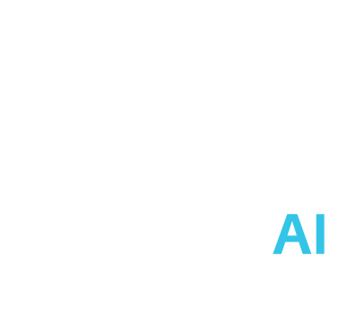

Ketamine suppresses REM sleep and markedly increases EEG gamma oscillations in the Wistar Kyoto rat model of treatment-resistant depression
Behavioural Brain Research 449, 114473
Sandor Kantor, PhD
Bridging preclinical and clinical development with 20+ years of expertise in neurophysiological biomarkers, pharmaco-EEG, and CNS drug discovery.

About
I am a translational neuroscientist with over 20 years of experience bridging basic research and drug development. My career has spanned academic institutions including Harvard Medical School and the University of Cambridge, as well as leadership roles in the pharmaceutical industry.
As former Scientific Director at a multinational preclinical CRO, I led international teams delivering neurophysiological biomarker programmes for major pharmaceutical companies and innovative biotech firms. My expertise centres on EEG methodology, pharmaco-EEG profiling, and the design of translational studies that de-risk CNS drug development.
I hold a PhD in Clinical Medicine and have authored over 20 peer-reviewed publications in leading journals including Brain, Sleep, and Neurotherapeutics. My research has been supported by over £270,000 in competitive funding.
20+
Years of experience
20+
Publications
£270K+
Research funding
1500+
Citations
Therapeutic area expertise
Services
I offer specialist consulting services tailored to pharmaceutical companies, biotech firms, and academic research groups working in CNS drug discovery and neuroscience research.
Real-world examples of neurophysiological studies conducted across species and therapeutic areas.
24-h wireless EEG/EMG recording in WKY rats after psilocybin
Kantor S, Higgins L, Upton N, Duxon M; SFN.org Neurosci Meeting Planner P711.05 (2021)
Pre-attentive auditory information processing after ketamine
Kantor S, Laursen B, Upton N, Bastlund JF; SFN.org Neurosci Meeting Planner 610.04 (2019)
A selection of peer-reviewed publications from over 20 papers spanning neurophysiology, sleep research, neurodegeneration, and CNS pharmacology.
Behavioural Brain Research 449, 114473
Neurotherapeutics 4, 1120–1133
Neuropharmacology 105, 298–307
Psychopharmacology 231, 593–601
Interested in discussing a project or exploring how I can support your research programme? I'd welcome the opportunity to hear about your needs.
Based in the United Kingdom. Available for remote consulting worldwide.